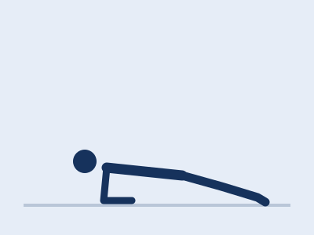

Планка

Статическое упражнение: держать тело ровной линией на предплечьях. Укрепляет пресс и спину.
Характеристики
- Основные мышцы: пресс
- Дополнительно работают: мышцы спины, ягодицы
- Снаряжение: не нужно
- Уровень: новичок
- Рекомендация: 3 подхода по 30–60 секунд
Техника выполнения
- Встань на предплечья и носки.
- Локти поставь под плечами.
- Тело должно быть прямой линией от головы до пяток.
- Держи положение и дыши ровно.
Частые ошибки
- Таз провисает вниз.
- Таз поднят слишком высоко.
- Задержка дыхания.